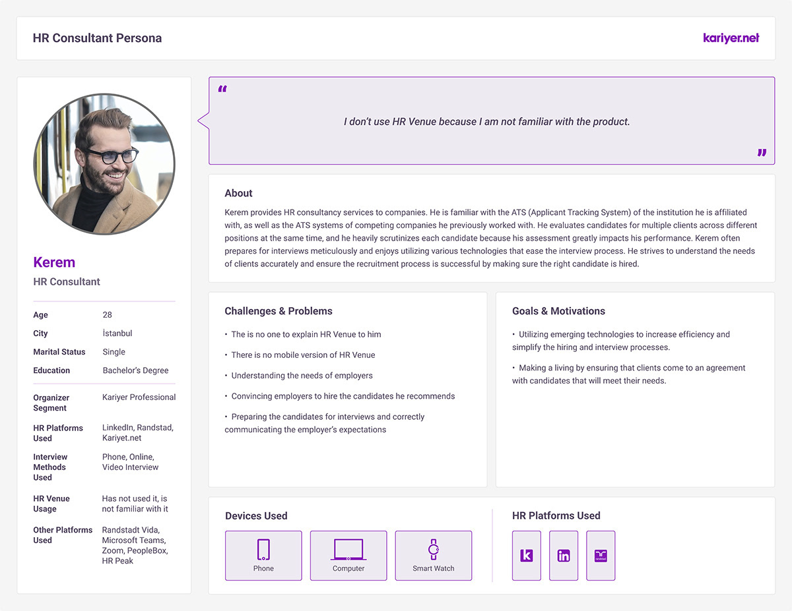
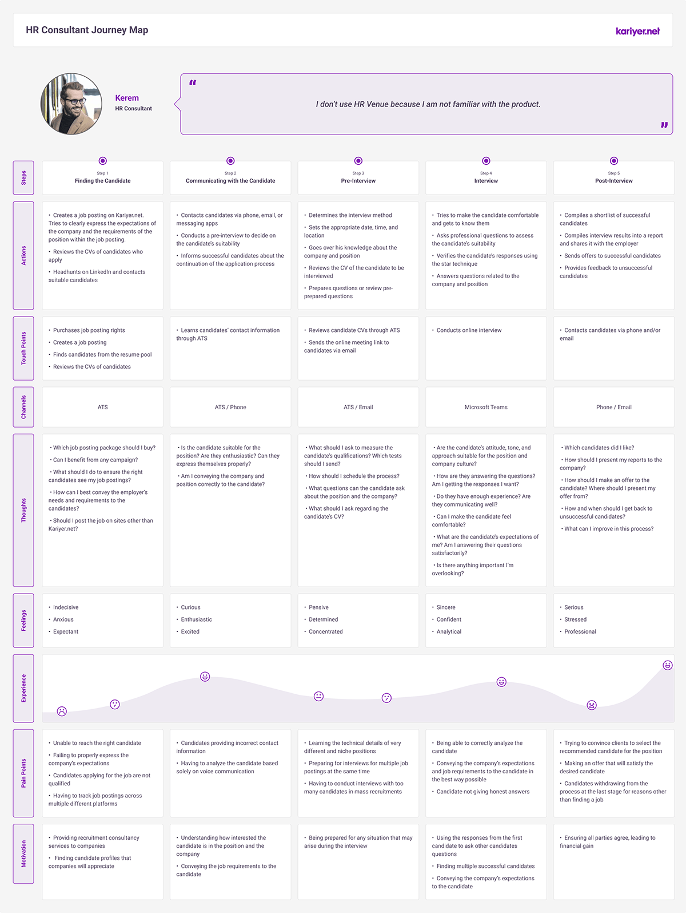

The context
Video interviewing promises speed: no scheduling ping-pong, no travel, asynchronous review. But inside a large ATS, a feature is only as good as its adoption. I interviewed over 20 users about how they actually used HR Venue in their recruitment work.
From transcripts to personas
The interviews were synthesized into 4 employer and 5 candidate personas, each grounded in observed behavior rather than demographics-first guesswork. The persona below is Kerem, an HR consultant who evaluates candidates for multiple clients at once, which is exactly the high-volume user video interviewing should help most.

The most valuable personas are the ones who should be power users but aren't. Kerem's unfamiliarity with a tool built for his exact workflow told us more than any satisfaction score.
Journey mapping the hiring process
For each persona we mapped the full recruitment journey, from creating the job posting through post-interview follow-up.

The map made the opportunity concrete: pain points like "having to conduct interviews with too many candidates in mass recruitments" and "trying to track job postings across multiple platforms" sit precisely at the stages HR Venue addresses. The barrier wasn't the value proposition but rather the familiarity, education, and visibility inside the ATS.
How the artifacts were used
- A shared reference: product, sales, and support could finally point at the same picture of "the user" instead of competing anecdotes.
- Prioritization by pain point: features could be argued for by pointing at a specific stage and emotion on the map.
- A consistent story across the ecosystem: this research also confirmed the findings of the Coensio study. Inside a large ATS, awareness and onboarding play an important role in determining adoption.